Parqué.
Te proponemos una selección de tres tipos de parqués: naturales, sintéticos y laminados. En los últimos años, hemos incorporado nuevos modelos para poderte ofrecer una gama de parqués lo suficientemente amplia, como para que encuentres aquel que cuadre con el interiorismo que buscas.
Te ofrecemos, así mismo, una amplia gama de materiales para suelos, en acabados más económicos y de fácil aplicación (en una mañana se podría cubrir un espacio de 80m2), ideales para reformar pisos que no se pueden permitir el lujo de estar “patas arriba” durante mucho tiempo.
Además, permiten una muy buena imitación de la madera, tanto en textura como en relieves.
Los parqués naturales que encontrarás en nuestro showroom, algunos de ellos con bases de roble, te permitirán obtener unas estéticas que invitan a combinarlos con otros tipos de maderas.
Marcas en el showroom
- Bariperfil
- Plus Cover
- Yvyra
- Lico
Y si lo que buscas no está en exposición, lo buscamos en la Bagnoteca.
Novedades 202613

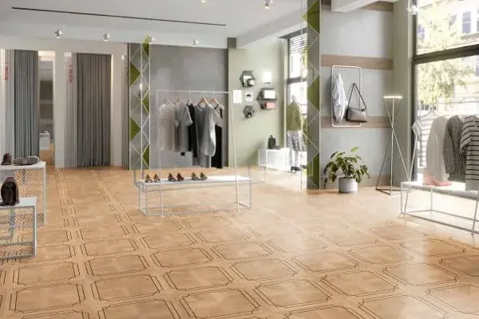
ParquéPavimento renovable simulando parqué Marqueteria – Lico Parquets
La serie Marquetería de Lico reúne seis modelos que reinterpretan patrones históricos de palacios europeos sobre una base renovable, con variaciones claras en geometría y tono.
Sanssouci Scandic ofrece una marquetería clara y cálida; Sanssouci Artic la lleva a un matiz más frío y luminoso. Antigua Colonial aporta un tono más oscuro y envejecido.
Chantilly destaca por un dibujo más contrastado. Castillo presenta una lectura sobria y profunda, mientras que Estella introduce un patrón estrellado en un tono medio equilibrado.

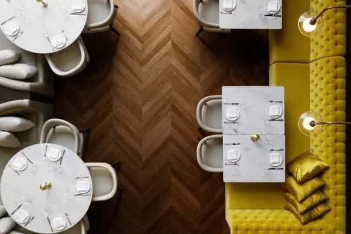
ParquéPavimento renovable simulando parqué Punta Hungría – Lico Parquets
El pavimento Punta Hungría de Lico traslada el patrón en “V” del chevron a un soporte completamente renovable, combinando madera, corcho y fibras naturales en una base libre de plásticos.
Resistente al desgaste cotidiano gracias al recubrimiento HotCoating, la capa superior Fibrano® aporta elasticidad, confort térmico y una pisada silenciosa, cualidades especialmente útiles en vivienda.
El diseño ofrece una lectura más sofisticada que la espiga tradicional, con un acabado cálido y muy estable.

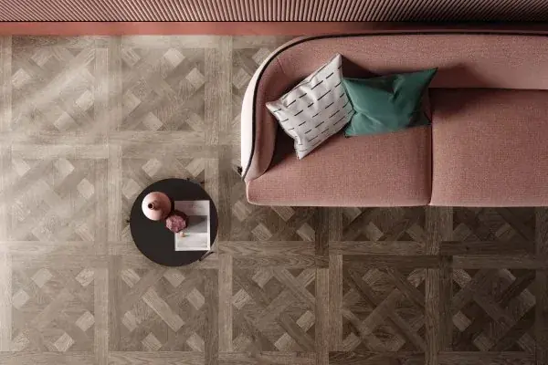
ParquéPavimento imitación parqué entrelazado Versalles – Lico Parquets
El pavimento Versalles de Lico ofrece la estética clásica del parqué entrelazado, con una base renovable 100% natural que mejora su rendimiento.
Su estructura multicapa —fibra de madera reciclada y corcho— aporta estabilidad, aislamiento acústico y una pisada más cálida.
Las 6 variaciones tonales y su espesor reducido de 9mm facilita la instalación en reformas.El tratamiento HotCoating, certificado para uso intensivo (clase 33), añade una protección duradera frente al desgaste y agentes químicos.
Es una opción con carácter sin asumir las limitaciones del parqué tradicional.
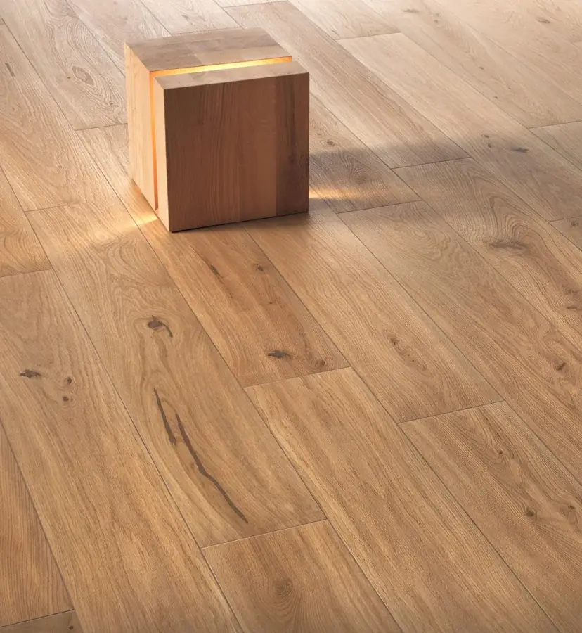
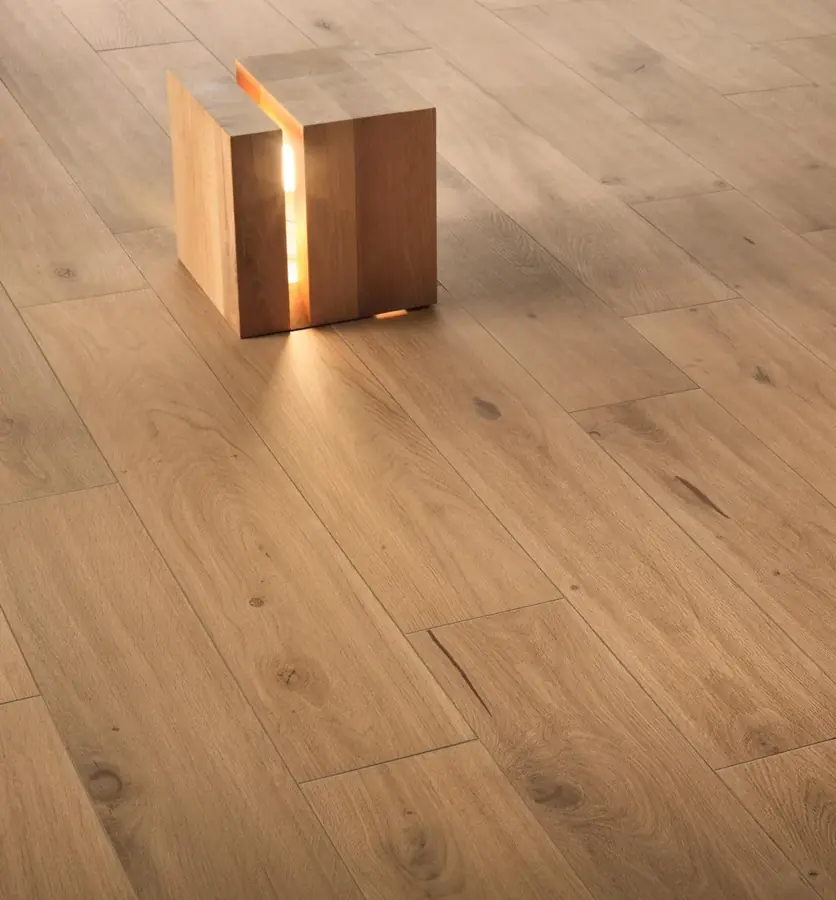
ParquéPavimentos cerámicos imitación madera Log – Atlas Concorde
Colección de pavimentos cerámicos con efecto madera desarrollada junto a Itlas, especialistas en roble natural. Log reproduce con fidelidad masillas, nudos y vetas, ofreciendo dos variantes gráficas de alto realismo.
Disponible en múltiples formatos y acabados, es apta para interior y exterior, perfecta incluso para revestir zonas húmedas.
Combina la estética cálida de la madera con la resistencia técnica y practicidad de la cerámica. Una solución versátil para espacios contemporáneos que requieren durabilidad sin renunciar a la autenticidad visual.
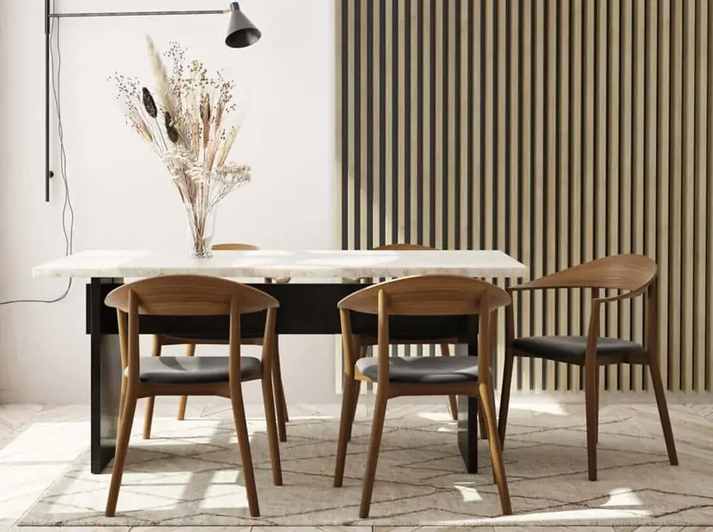
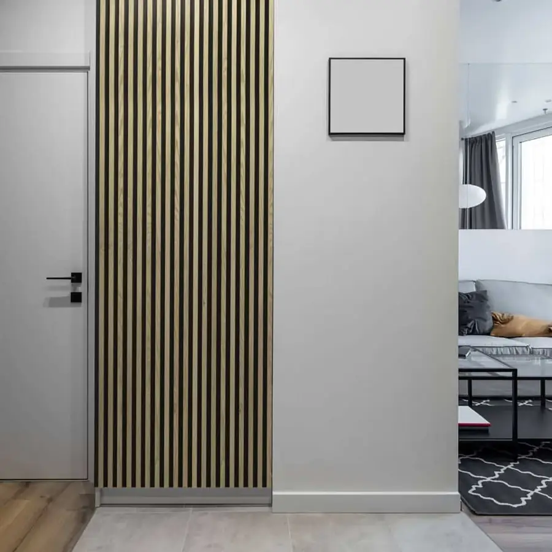
ParquéRevestimientos rústicos en láminas, Linea Slim Oak - Stegu
Stegu amplía su catálogo en láminas con la colección Slim Oak, donde el roble es el principal actor. La colección está hecha en MDF ligero, revestido y con enchapado de calidad superior aportando a las láminas una gran resistencia y durabilidad.
El carácter rústico y natural que le brinda el roble convierte a esta colección en la elección más versátil, ideal para adaptarse a todo tipo de escenarios.
Las finas tablas se encuentran en tres formatos, sin fondo y de forma individual o sobre fondo negro de una sola pieza y o en tres láminas.
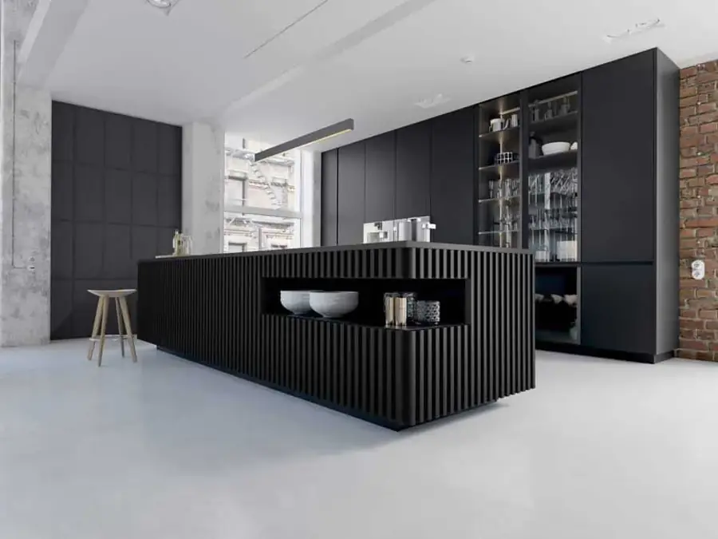
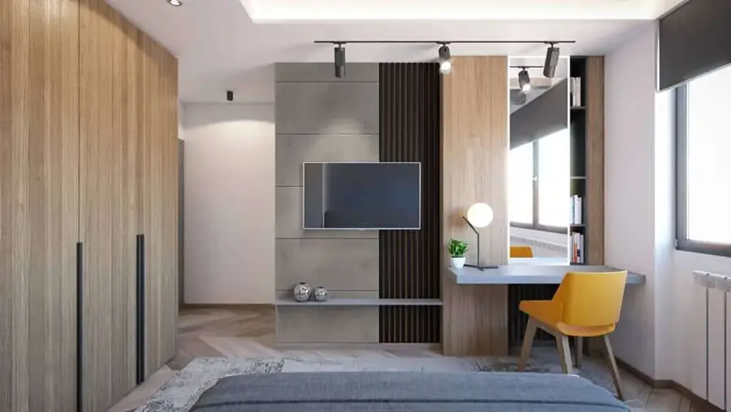
ParquéRevestimiento en láminas Linea Slim Black - Stegu
Stegu lanza su nueva línea de láminas de madera Slim Black, una opción ideal para revestir paredes y crear distintos ambientes dentro de una misma estancia, o como solución decorativa.
La ligereza que aporta el tablero MDF hace que se convierta en la mejor opción para decorar paredes, columnas, muros e incluso techos. Además, este material garantiza su fácil mantenimiento y limpieza.
Slim Black es sinónimo de sofisticación y elegancia, con un diseño tridimensional pero a la vez minimalista que encaja dentro de cualquier tendencia.
La colección está disponible en láminas individuales y en paneles sobre roble con una pieza o con tres piezas.
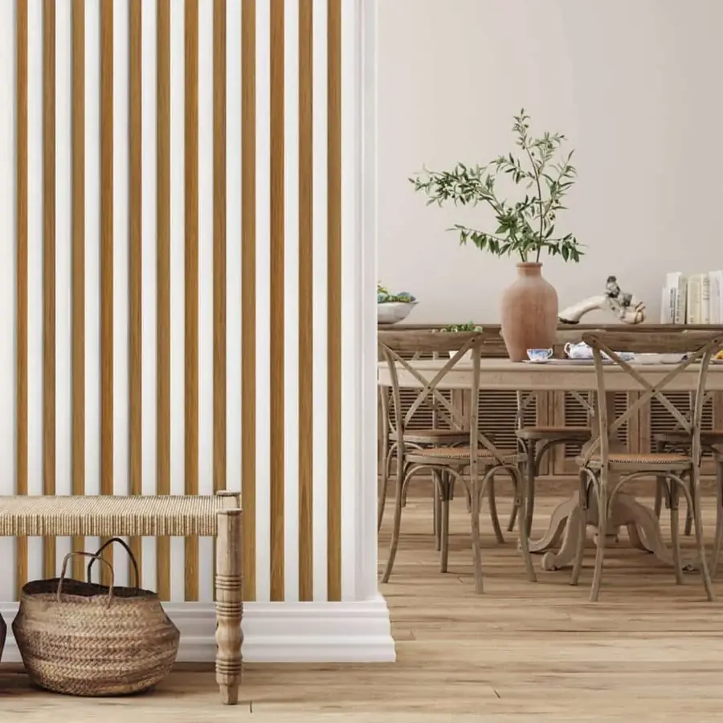
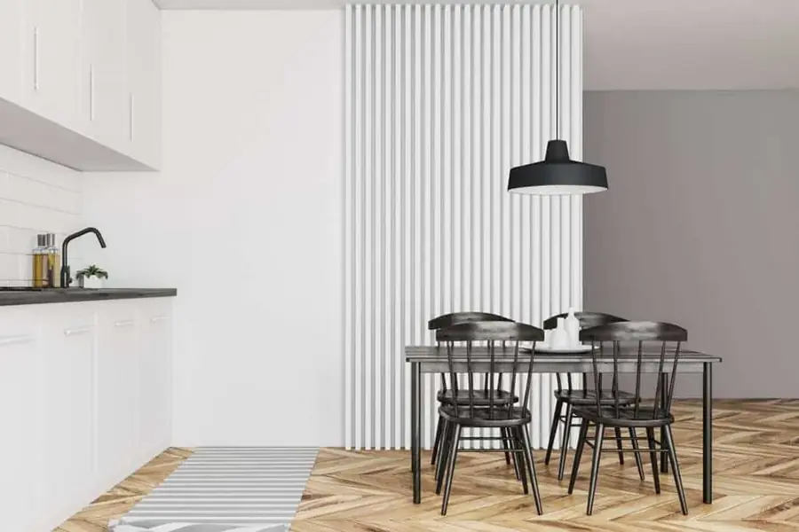
ParquéLinea Slim White – Stegu
Las láminas decorativas han llegado para quedarse y Stegu lo sabe. La marca lanza su nueva línea “Slim White” de laminillas de madera en tonos blancos.
Su diseño minimalista y neutro las convierten en la solución perfecta para aquellos que buscan un cambio sencillo y rápido en la decoración de su hogar. Además, su aspecto neutro y minimalista aseguran el equilibrio visual que cada espacio necesita.
Las láminas están hechas en MDF ligero, convirtiéndolas en un gran aislante acústico. Gracias a su forma lineal, su instalación puede ir tanto en dirección vertical como horizontal.
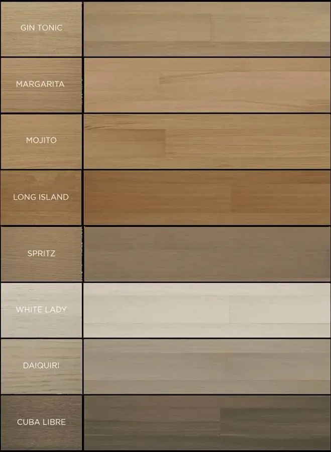
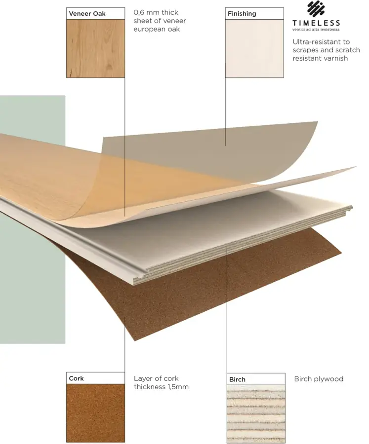
ParquéPavimento en madera Family - Florian
La firma italiana pone su granito de arena en la lucha para preservar el medioambiente con su nueva línea de pavimentos en madera “Family”.
Una nueva generación de suelos 100% ecológica de máxima calidad y con las mejores prestaciones técnicas. Su esqueleto está construido en roble natural que, junto al contrachapado de abedul y su base en corcho, asegura la máxima resistencia además de garantizar un gran aislamiento acústico y térmico.
En la misma línea, la colección ha sido sometida a un tratamiento antibacteriano que aporta higiene y seguridad a las estancias en las que se instala.
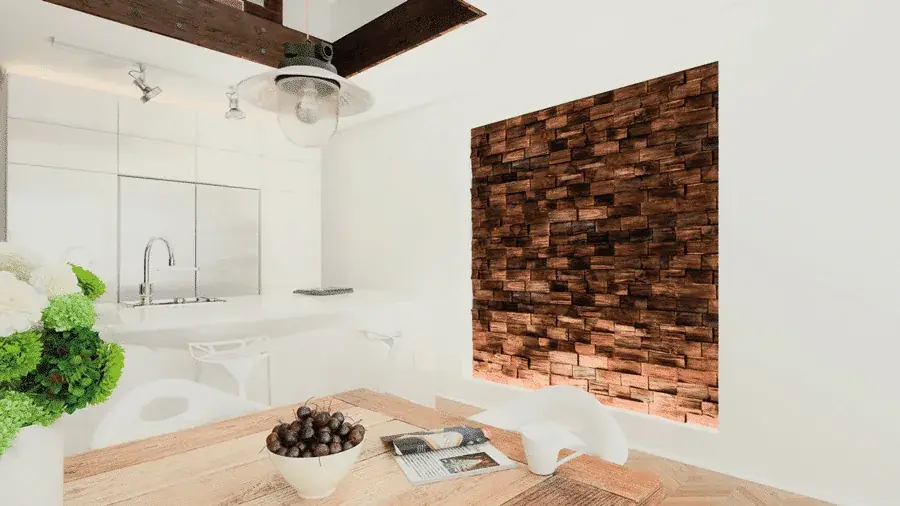
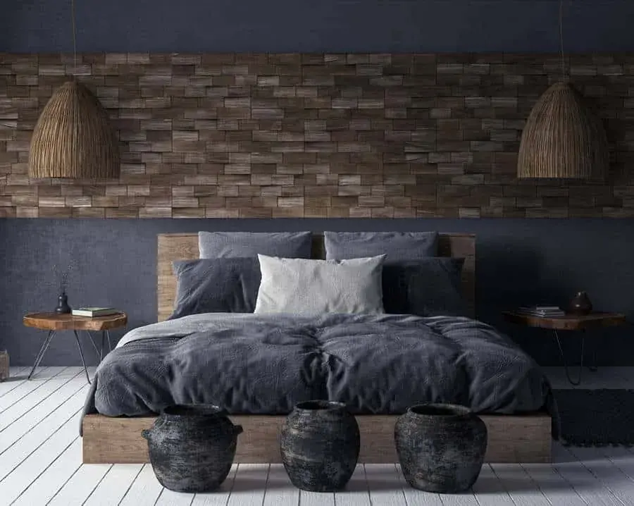
ParquéPaneles de madera para paredes Axen - Stegu
Stegu lanza una nueva colección de paneles para paredes. En este caso, la colección “Axen” se caracteriza por el uso de la madera como material principal, que se convierte en la auténtica protagonista de su estética.
Paneles de grandes dimensiones formados por la unión aleatoria de pequeñas piezas rectangulares, talladas de distinta forma, que generar una harmonía visual especialmente cálida y acogedora.
El volumen de los elementos, en 3d, aporta movimiento y dinamismo a la estancia rompiendo con la sobriedad y planitud de las paredes.
Los planes se encuentran en dos tonos de madera diferentes, uno más claro y otro más oscuro y sus medidas son de 780 x 190 x 6-17 mm.
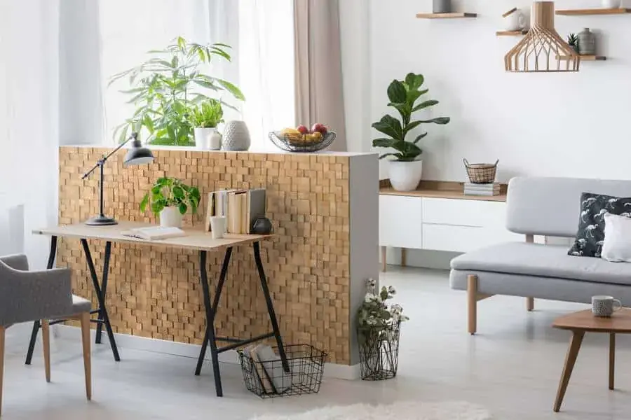
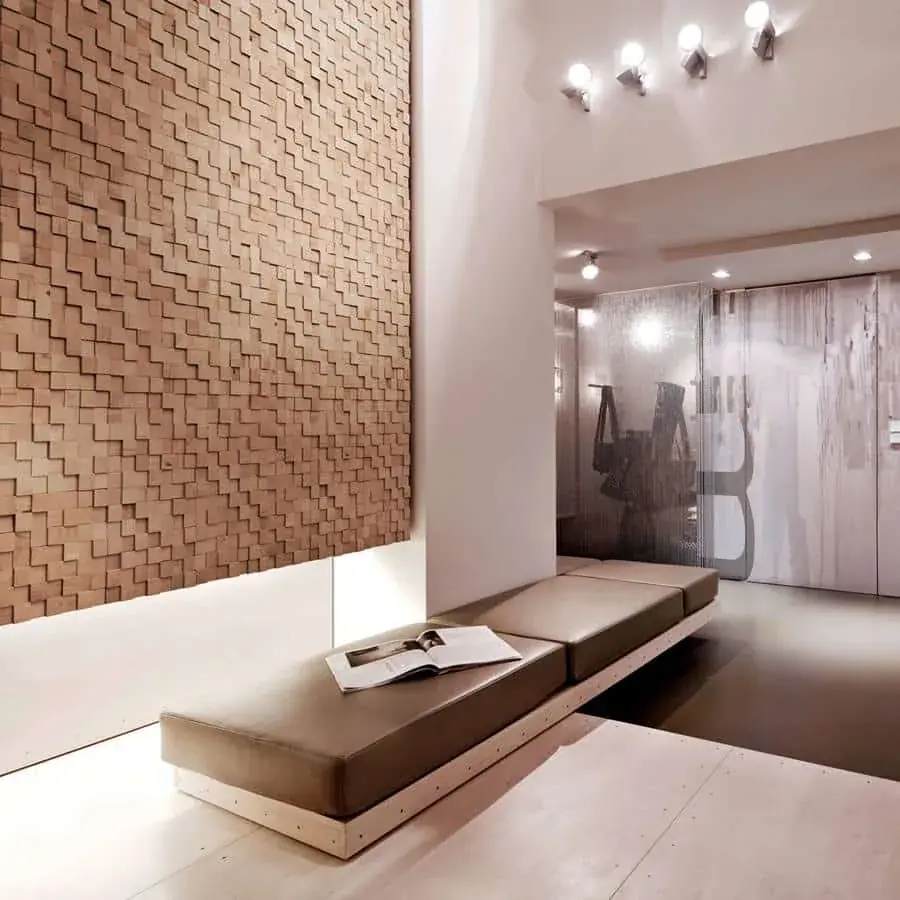
ParquéPaneles de madera para paredes Cube - Stegu
Stegu amplía su oferta de paneles para paredes incorporando el modelo “Cube”.
Formado por la combinación de múltiples cubos de madera geométricos de pequeñas dimensiones, el panel pasa a formar parte de la decoración de cualquier estancia. La posición de estos, a distintas alturas, incrementa su atractivo aportando fuerza y energía a la pieza.
Con un tono sofisticado y nórdico, sin llegar a ser rural, la confección del panel en este material comunica calma y serenidad, en constante equilibrio con el resto de los elementos de la estancia.
El modelo Cube está disponible en un único formato cuadrado (343×343).
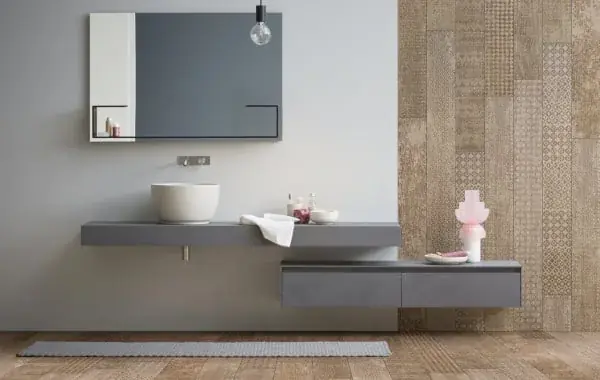
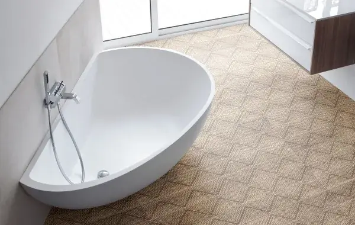
ParquéNuevas gráficas de parquets grabados Undici Collection – Inkiostro Bianco
Acostumbrados como nos tienen a incorporar interesantes novedades en cuanto a diseños de pavimentos y revestimientos de calidad se refiere, Inkiosto Bianco acaba de incorporar nuevas gráficas, creadas por diseñadores y arquitectos de prestigio, a la colección de parquets grabados con láser Undici, de la que ya te hemos hablado anteriormente. Ahora dispones de once diseños, diez texturas y una única base.
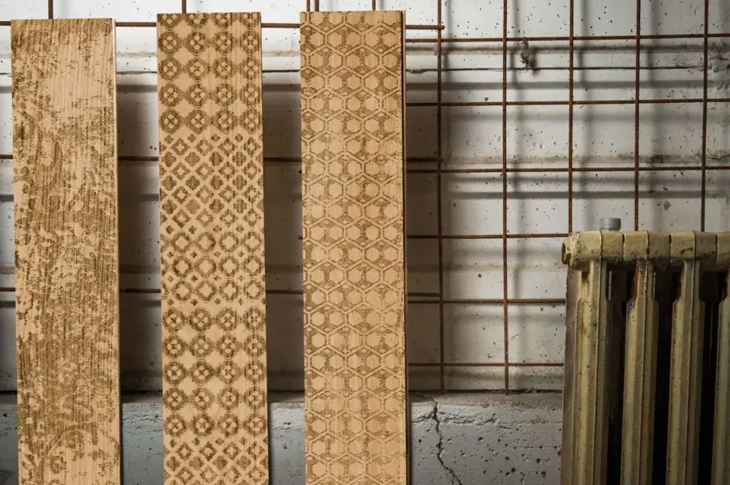
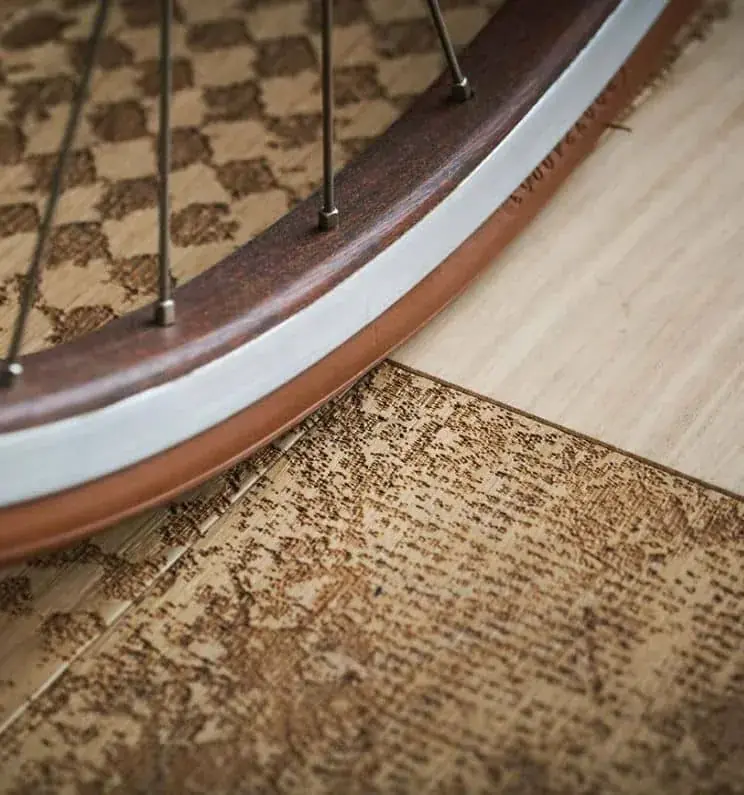
ParquéParquet grabado - Inkiostro Bianco
De la mano de la exitosa colaboración entre la firma italiana Inkiostro Bianco y Listone Giordano, nacen estos elegantes y vanguardistas parquets de roble natural grabado, cuya fabricación ha sido posible gracias a la utilización de la técnica de grabado con láser.
Una amplia colección, que combina madera natural y madera grabada, inspirada en la naturaleza, y que como verás en las imágenes que incoroporamos, ofrece gran impacto visual.
La tienes disponible en medidas 140 x 1200 mm, en cinco decoraciones clásicas y otras cinco de diseño actual.
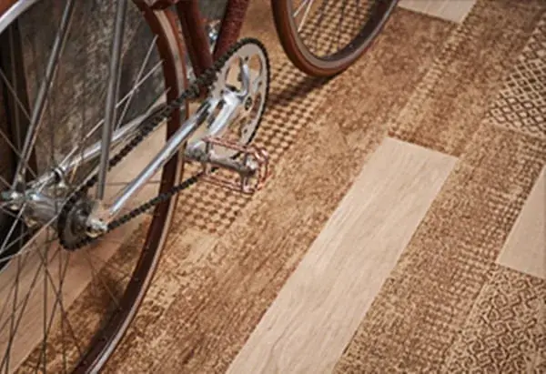
ParquéParquets de madera grabada Undici - Inkiostro Bianco
La internacionalmente afamada marca de pavimentos y revestimientos Inkiostro Bianco LAB, en colaboración con Listone Giordano, acaba de lanzar al mercado el que es su primer prototipo de parquet de madera grabada.
Disponible en hasta once texturas diferentes encuadradas en cinco modelos de decoración clásica, cinco modelos con patrones de diseño y uno de fondo, este nuevo parquet de madera te propone una decoración natural que a la vez puede recordarte a una escultura realizada a mano, aspectos que te posibilitan disponer de un suelo con el diseño más vanguardista.
Suelos de madera de la más alta calidad, que harán las veces de aquellos y aquellas que precisan disfrutar siempre de la mejor calidad.